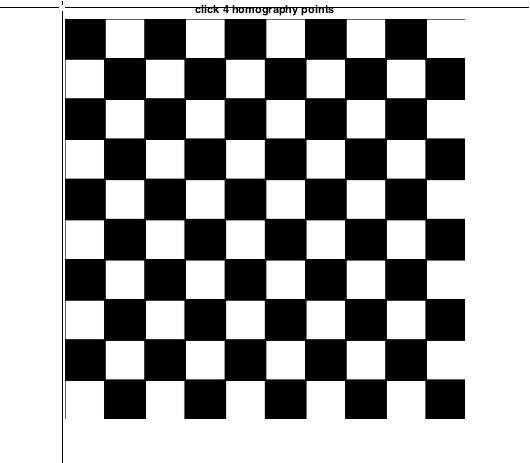
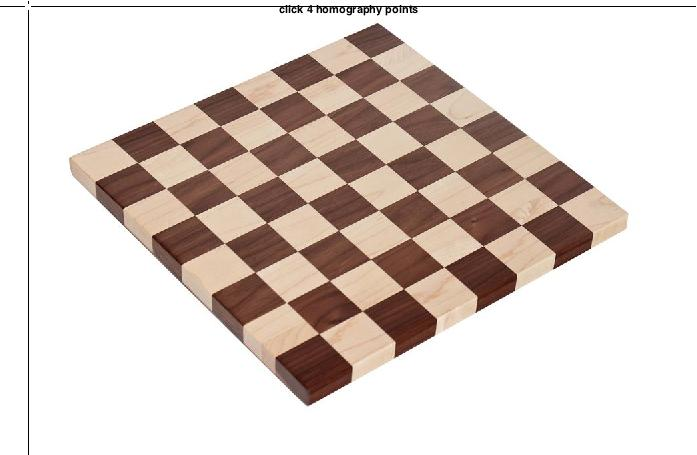
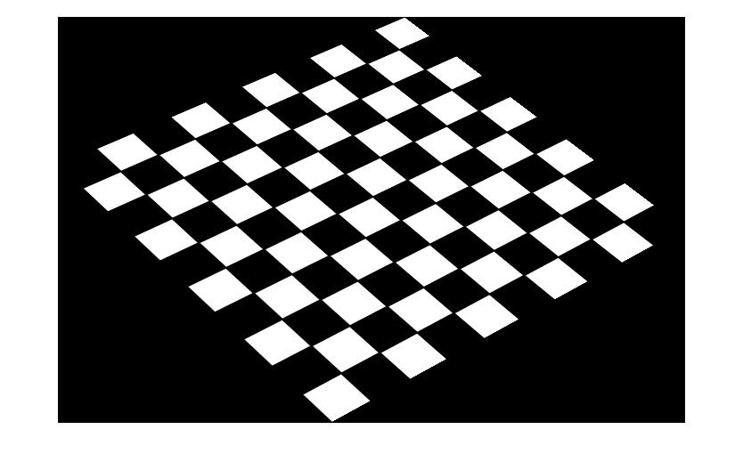
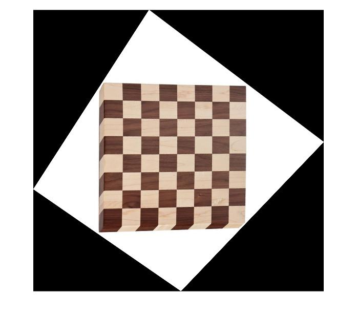
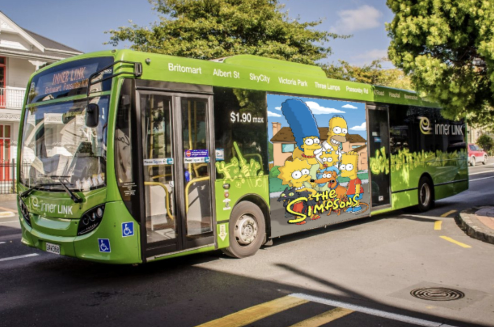
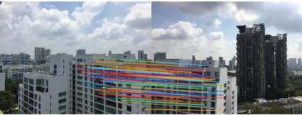
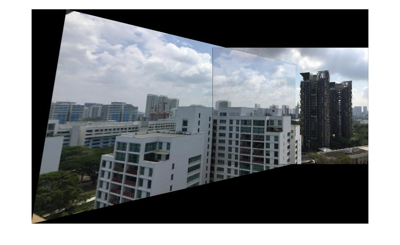
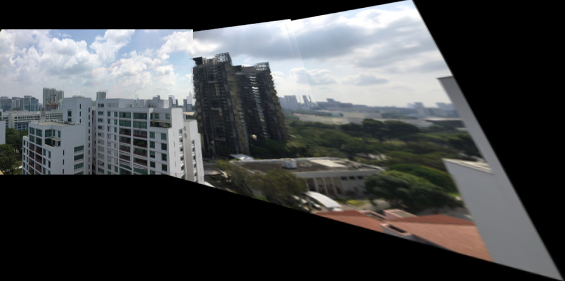

Assignment 3: Panoramic Image Stitching
Deadline: March 16, 2022 at 5pm
Part 1: Homography
For this part, you must write your own code for computing the homography matrix and transforming an image.- Download h1.jpg and h2.jpg
- Provide a GUI where the user can click 4 points on an image. See an example code here.
- Let the user to choose 4 points on h1.jpg and 4 points
on h2.jpg
 
- Compute the homography matrix from h1.jpg to h2.jpg using NumPy's SVD function, and show the homography matrix.
- Use the homography matrix to tranform h1.jpg to h2.jpg, and show
the result (note, you must write your own function for
transforming the image):

- Compute the homography matrix from h2.jpg to h1.jpg, and show the homography matrix.
- Use the second homography matrix to tranform h2.jpg to
h1.jpg, and show:

- Download the two images below: simpsons.jpg and bus.jpg. Ask the user to select the points
for transforming the simpsons image
to the advertisement area of the bus. Compute the homography,
transform the image, and show the transformation result,
similar to:

Part 2: Manual Homography + Sticthing
For this part onward, you are allowed to use OpenCV functions for computing the homography matrix and transforming an image. See more discussion here.- Load im01.jpg and im02.jpg: [files]
- Let the user to choose 4 points on im01.jpg and 4 points
on im02.jpg


- Compute the homograhy matrix
- Stitch the images together using the computed homography
matrix and show the result:

- Explain why there is an effect of double edges in the overlapping regions between im01.jpg and im02.jpg
Part 3: Homography + RANSAC
For this part, you must write your own code for computing the best homography matrix using RANSAC.- Load im01.jpg and im02.jpg
- Based on SIFT, find matches between the two images
- Compute the best homography matrix using RANSAC
- Show all the inlier matches (matches that
support your best homography matrix):

- Stitch the images together using the best homography
matrix and show the result:

Part 4: Basic Panoramic Image
For this part, take your own images that support your implementation. You must include the images in your submission.- Using SIFT and RANSAC for computing the homography matrices, create a program to generate panoramic images given ordered images
- Using as many provided images as you can, show the output of your panoramic image.
- The figure below is generated from 3 images and is
just an example. You should use as many images as you can.

Submission:
Submit your codes via CANVAS. Again, your codes must be grouped/separated based on the parts above.